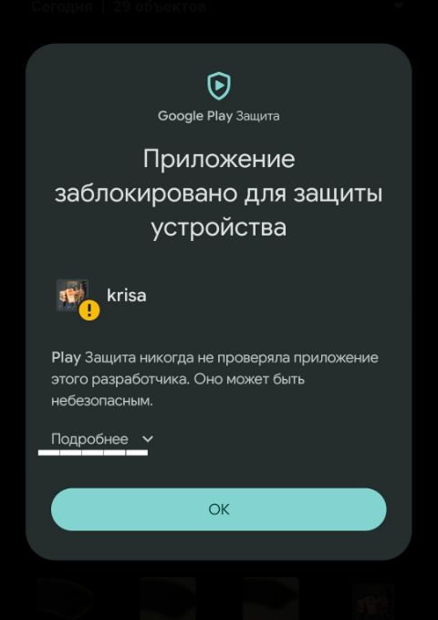
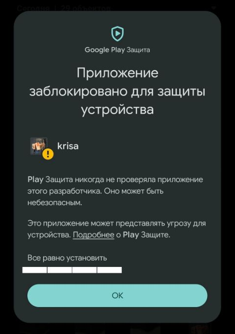
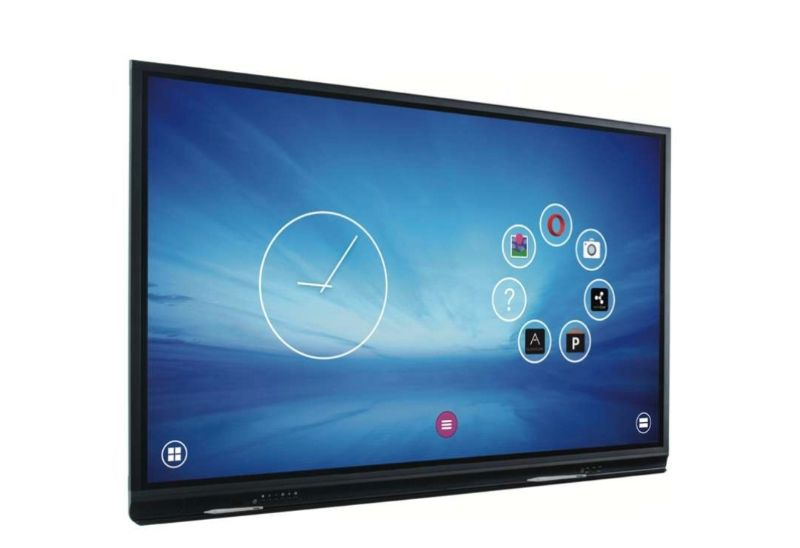
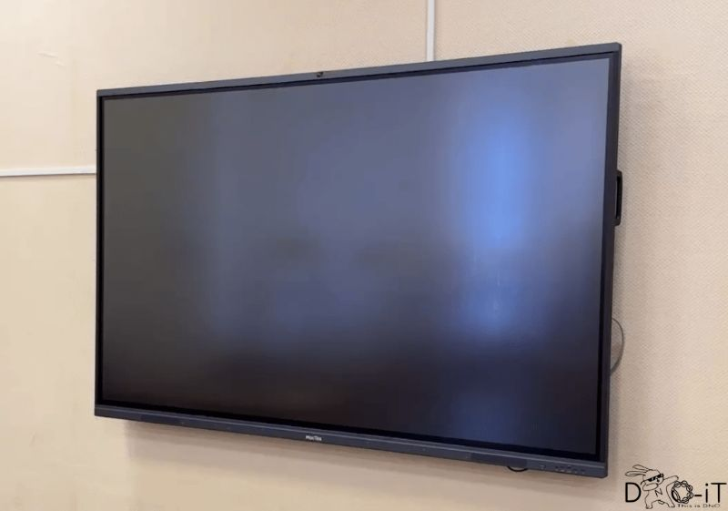

Гид по ИК-пульту для интерактивных досок, проекторов и кондиционеров: скачать, установить, подключить, пользоваться
Откройте гид на компьютере и наведите камеру телефона на нужный код — ссылка откроется на телефоне.
Если файл не скачивается, откройте этот гид на сайте: mikhailkulinskii1910-jpg.github.io/vsluh/irbis/guide/


Почему так. krisa37™ поставляется файлом, а не через Google Play, и подписана не магазином. Play Защита этого разработчика никогда не видела, поэтому предупреждает. Приложение не просит доступа к контактам, файлам или камере: оно использует только ИК-порт, USB-передатчик и звук.
Обновление. Новую версию скачивайте по той же ссылке и ставьте поверх старой — настройки, тема и состояние кондиционера сохранятся.
Если кнопки «Всё равно установить» нет: откройте Google Play → значок профиля → «Play Защита» → шестерёнка → выключите «Проверять приложения с помощью Play Защиты». Установите krisa37™ и сразу включите проверку обратно.
В iPhone нет встроенного ИК-передатчика — ни в одной модели. Чтобы управлять техникой с iPhone, нужен звуковой ИК-адаптер или Wi-Fi ИК-передатчик — см. передатчики. В App Store krisa37™ нет: для этого нужен платный аккаунт разработчика Apple.
Не нужны ни компьютер, ни App Store. Умеет всё то же, что приложение: доски, проекторы, кондиционер, темы, звуковой адаптер и Wi-Fi передатчик. Обновляется сама.
Apple не разрешает ставить приложения файлом прямо на телефоне. Файл подписывается вашим Apple ID на компьютере (Windows или Mac) бесплатной программой Sideloadly:
krisa37.ipa на компьютер — кнопка выше.С бесплатным Apple ID приложение работает 7 дней, потом его нужно поставить заново тем же способом (данные не пропадут). До 3 таких приложений одновременно. AltStore (altstore.io) продлевает подпись сам, когда компьютер и iPhone в одной Wi-Fi сети.
Бесплатная программа, которая ставит файл .ipa навсегда, но работает только на части версий iOS (примерно 14.0–16.6.1 и 17.0). Версию смотрите в «Настройки» → «Основные» → «Об этом устройстве». Сервисы-«подписыватели без компьютера» (ESign, Scarlet и подобные) не советуем: их сертификаты часто отзывают, и это риск для безопасности.
Выбор передатчика — кнопка [tx] в правом верхнем углу. Там же «Проверка» (что видит телефон) и «Тема».
| Передатчик | Что это |
|---|---|
| Встроенный ИК-порт Android | Окошко на верхнем торце у многих Xiaomi, Redmi, POCO, части Huawei и Honor. Самый простой вариант — ничего покупать не нужно. |
| USB-C передатчик Android | Маленький «свисток» с тёмным прозрачным кончиком в разъём зарядки. На Xiaomi включите OTG. |
| Звуковой адаптер Android, iPhone, веб | ИК-светодиоды в разъёме наушников (на iPhone — через переходник Lightning или USB-C на 3,5 мм). Режимы «2 светодиода» и «1 светодиод». Громкость — на максимум. |
| Wi-Fi передатчик iPhone, веб | Плата ESP8266/ESP32 с ИК-светодиодом и прошивкой Tasmota в той же Wi-Fi сети. Телефон шлёт ей команды, она светит на технику. Удобнее всего для кондиционеров. В [tx] укажите адрес платы, например 192.168.1.50. |
В веб-версии с Wi-Fi передатчиком: сайт открыт по https, а Tasmota отвечает по http — браузер может заблокировать запрос. Тогда используйте приложение или откройте пульт по http.
> Встроенный ИК-порт. Если «не найден» — нажмите [tx] и выберите другой.POWER. Внизу появится строка вида > tx POWER 0x807F18E7 [sent] — команда отправлена.| Вкладка | Что внутри |
|---|---|
| Доски | Пульты интерактивных досок: IRBIS и MocTec (подвкладки сверху). |
| Проекторы | NEC, Epson, InFocus, BenQ — все кнопки их пультов. |
| Кондиционеры | Haier — термостат, режимы, скорость, жалюзи, таймер. |
| Сценарии | Свои цепочки команд из блоков, как в Scratch: устройство, команда, ждать, повторить — и одна кнопка «Отправить». |
| Рулетка | Только Android: перебор кодов для неизвестной техники. |
| Цвет | Настройки текущей темы оформления. |


Какая у вас доска — смотрите надпись на нижней рамке и наклейку на задней стороне. ИК-приёмник обычно в нижней рамке, рядом с кнопками и индикатором питания.
| Кнопка | Что делает |
|---|---|
| POWER | Включает и выключает доску. |
| VOL- / VOL+ | Тише и громче. Удерживайте, чтобы менять плавно. |
| MENU | Меню настроек доски (IRBIS). |
| EMPY SCREEN | Гасит изображение, звук остаётся. Ещё раз — вернуть картинку. Название с опечаткой, как в базе кодов. |
| FREEZE | Стоп-кадр (IRBIS). |
| INPUT | Выбор источника: встроенный Android, компьютер, HDMI. |
| J UP / DOWN J LEFT / RIGHT | Стрелки по меню. Удерживайте, чтобы листать. |
| J OK | Подтвердить выбор. |
| HOME / BACK | Домой и назад (MocTec). |
Полный пульт MocTec (52 кнопки, в три колонки): кроме основных — MUTE, PAGE UP/DOWN, цифры 0–9, CH+/CH−, DISPLAY, BACKSPACE, NOTE, цветные RED/GREEN/YELLOW/BLUE, SPACE, WIN, FN, ALT+TAB, ALT+F4 и F1–F12 (клавиатурные кнопки рассчитаны на Windows во встроенном компьютере доски OPS, если он есть).
RED на пульте MocTec — переключатель блокировки экрана и кнопок доски. Если доска «заблокировалась», нажмите RED ещё раз.
У IRBIS в базе IrCode Finder и в файлах пульта Delly есть только эти 12 кнопок — других кодов IRBIS пока нигде не найдено. В той же базе к марке IRBIS привязан и 52-кнопочный пульт MocTec: если на вашей IRBIS не работает подвкладка IRBIS, попробуйте MocTec.
Под пультом IRBIS — мои кнопки: сценарии с отметкой «на пульт», по две в ряд. Нажатие — выполнить (ещё раз — остановить), удержание — меню: изменить в «Сценариях», переименовать, убрать с пульта, удалить. Готовые макросы: Тихо (20 × VOL-), Громче +5, Пауза урока (FREEZE и EMPY SCREEN), Следующий вход (INPUT → J DOWN → J OK). [ + макрос ] создаёт новую кнопку и открывает её в «Сценариях»; любой сценарий можно вынести на пульт кнопкой [ на пульт ].
[ сканер ▾ ] перебирает все 256 команд адреса IRBIS (807F) — у доски могут быть команды, которых нет на пульте. На плашке — код и «новая» или «известна: …» (поиск по всем пультам приложения).
«только новые» пропускает известные коды, «адрес» — другой адрес NEC (4 hex-цифры), «найденные: N» — переименовать или удалить найденное.
Осторожно: скрытые команды могут открыть сервисное меню, поменять настройки или выключить доску. Авто-режим не оставляйте без присмотра.
Коды IRBIS — из базы IrCode Finder (пульт #500202), коды MocTec — из той же базы (#500275) и проверены расшифровкой файлов пульта МОСТЕХ. Коды MocTec на настоящей доске пока не проверены.
Вкладка «Проекторы» → марка сверху. Кнопок много, они в три колонки: сначала основные (питание, источник, меню, стрелки, громкость), ниже — остальные.
| Марка | Кнопок | Модели |
|---|---|---|
| NEC | 56 | LT, NP, VT, MT и похожие. Есть отдельная POWER OFF. |
| Epson | 39 | EB-…, BrightLink, PowerLite. |
| InFocus | 34 | Серия IN. |
| BenQ | 52 | MX, MS, MW и похожие. Две кнопки включения — POWER и POWER ON: разным моделям нужен разный код. |
Выключение: проекторы спрашивают подтверждение — нажмите POWER два раза (с паузой около секунды).
Кнопки мыши (LEFT/RIGHT CLICK, PAGE UP/DOWN, POINTER) у NEC, Epson и InFocus обычно работают, только если проектор подключён к компьютеру USB-кабелем: тогда он передаёт компьютеру команды мыши и листание слайдов.
Коды — из базы IrCode Finder; пульты одной марки объединены, повторы убраны.
Вкладка «Кондиционеры» → Haier. Термостат: ведите пальцем по дуге (16…30°) или жмите − / +. Кнопки: питание, режим (охлаждение → обогрев → осушение → вентилятор → авто), скорость (авто, 1, 2, 3), авто поворот, направление жалюзи, сон, турбо, таймер выключения (1, 2, 4, 8 ч).
Вид пульта. Пульты Haier бывают трёх видов. Если кондиционер не отвечает — переключите «1 · YR-W02» → «2 · V9014557» → «3 · HSU07» и нажмите питание ещё раз.
Важно: пульт кондиционера при каждом нажатии передаёт всё сразу — режим, температуру, скорость. Поэтому приложение запоминает своё состояние. Если кондиционер включали другим пультом, сначала выставьте в приложении то же самое, иначе первое нажатие поменяет и остальные настройки.
Кадры Haier собраны по описанию протоколов библиотеки IRremoteESP8266 и проверены на её эталонных сообщениях; на настоящем кондиционере пока не проверены. Строка с HEX под кнопками — какие байты ушли.
Вкладка «Сценарии» (второй ряд вкладок) — редактор из цветных блоков, как в Scratch. Сценарий начинается с жёлтой шапки «когда нажата ▶ Отправить» и выполняется сверху вниз одной кнопкой [ ▶ Отправить ]: например, «Конец урока» выключает проектор (два нажатия POWER) и доску.
| Блок | Что делает |
|---|---|
| устройство ‹…› | Кому идут команды ниже: доска IRBIS или MocTec, проектор NEC / Epson / InFocus / BenQ, кондиционер Haier (вид пульта 1, 2 или 3). |
| отправить ‹кнопка› | Любая кнопка этого устройства, включая «доп.». Для кондиционера — блок «кондиционер ‹…›»: питание, режим, температура, скорость. |
| ждать (N) сек | Пауза от 0,1 до 600 секунд — проектору нужно время между двумя POWER. |
| повторить (N) раз | C-блок: всё, что лежит у него внутри, повторяется N раз (1…999). Циклы можно вкладывать. |
Цвета блоков подстраиваются под тему оформления и её настройки. Держите телефон направленным на технику всё время сценария: между командами приложение делает паузу 150 мс.
Для техники, кодов которой нет: по очереди шлёт 2560 команд NEC (10 адресов × 256), около 5 в секунду.
Результат непредсказуем: устройство может сменить источник, громкость, открыть меню, заблокировать экран или кнопки, выключиться — или не отреагировать. Если доска заблокировалась, дойдите кнопками ◀ / ▶| до кода 04FB 3AC5 (№ 59) и отправьте его ещё раз — это переключатель блокировки.
Тема — [tx] → «Тема» (в веб-версии и на iPhone — в настройках [tx]). Настройки темы — вкладка «Цвет».
| Тема | Вкладка «Цвет» |
|---|---|
| Терминал | 6 цветов, круг «свой цвет», RGB — 28 переливов цвета по экрану. У зелёного — фон MATRIX (бегущий код). |
| Призма | Ползунки: яркость, прозрачность стекла, цвета радуги, цвет фона. |
| Тепловизор | 10 палитр: Ironbow, White Hot, Rainbow HC, Arctic, Lava, Medical, Sepia, Night Vision, Hot Alert, Ice. |
| Чертёж | Светлота ⬜—🟦—⬛ (от светокопии до ночного) и цвет чертежа. |
[sent] → команда не ушла. [tx] → «Проверка» и выберите передатчик, который телефон видит.[sent] есть, но тишина → подойдите ближе, уберите препятствия, целитесь в приёмник (куда).Пока нет: для этого нужны аккаунты разработчика (Google — $25 один раз, Apple — $99 в год). Android-версию скачивайте файлом выше, на iPhone — веб-версия на экране «Домой».
Нет: ИК-передатчика в iPhone нет. Нужен звуковой адаптер или Wi-Fi передатчик.
По ИК — только «стрелками»: у проекторов NEC и Epson с подключённым по USB компьютером — почти как мышь, у досок — перемещение по меню. Настоящего плавного курсора ИК не даёт.